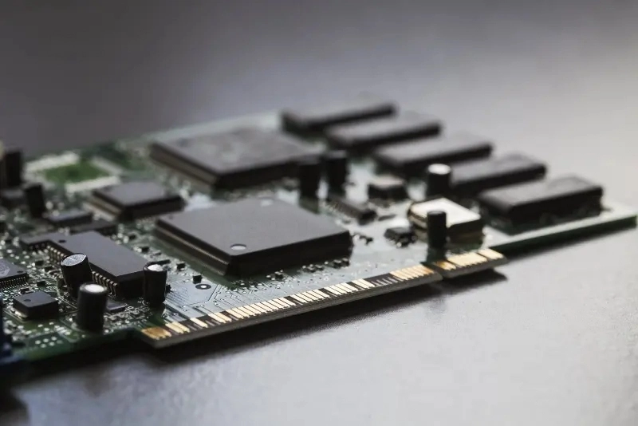
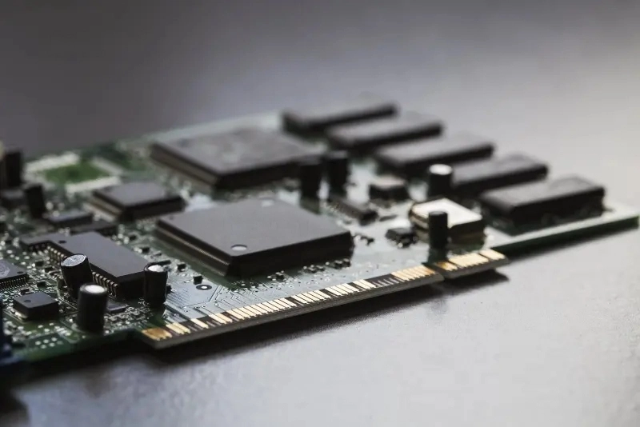

About Me
|
In my mission to explore the technology, I constantly seek out new and
emerging trends. Like artificial intelligence and virtual reality, I look
into the latest innovations, eagerly absorbing knowledge and experimenting
with cutting-edge tools. The fast-paced nature of the tech world keeps me
on my toes, pushing me to adapt, learn, and stay ahead of the curve. With
each new discovery, I am excited by the boundless potential technology holds
to shape the future and make a positive impact on the world.
|
 


|